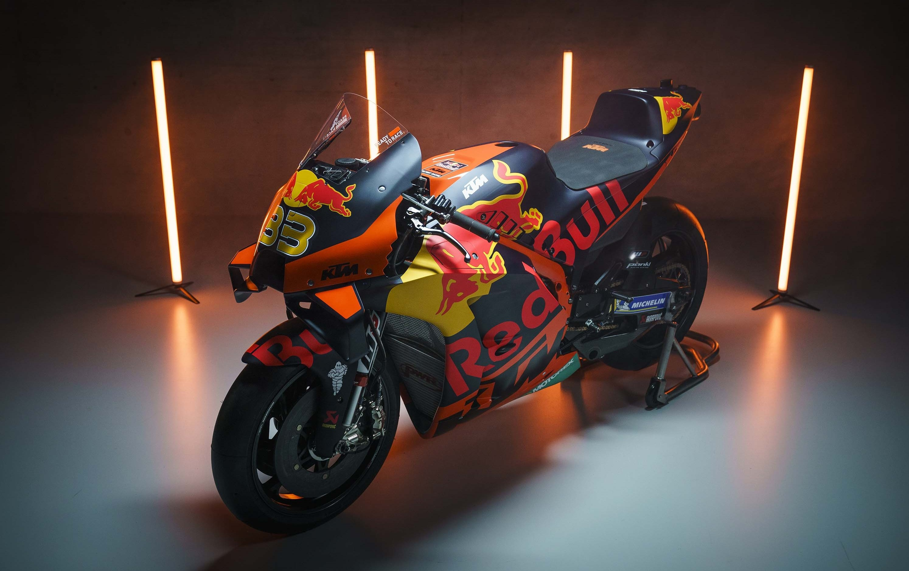

2022 represented the 73rd year of Grand Prix motorcycle racing and for KTM it was the sixth season as a
competitor in the MotoGP class. The company were present in FIM Grand Prix World Championship’s three categories
and then in support series’ with over 150 motorcycles and four different models. 2022 was the longest campaign on
record: twenty rounds that stretched from Australian to Argentina, from March to November in six continents and
was watched at the circuits by 2.42 million spectators.
For the third year in a row there were four KTM RC16s on the MotoGP grid. KTM grasped two MotoGP victories (in
Indonesia and Thailand) and a total of five podium finishes as well as 6th (Brad Binder) and 10th (Miguel
Oliveira) positions in the final championship standings. Red Bull KTM Factory Racing classified 2nd from the
twelve teams in MotoGP; a milestone achievement in such a young history as part of the premier class field. KTM
have owned at least one MotoGP race per year for the last three seasons and now have a total of six wins.
For 2023 Red Bull KTM Factory Racing welcome Grand Prix winner Jack Miller into the works setup alongside Brad
Binder with a two-year agreement. The Australian comes back into the Red Bull KTM structure after finishing 2nd
for the Red Bull KTM Ajo crew in 2014 Moto3. 2023 will be Binder’s ninth season as part of the Red Bull KTM family
and fourth on the KTM RC16 as KTM once again become a two-rider program.

KTM GP ACADEMY
KTM are able to scour highly competitive development and ‘feeder’ series’ like the Red Bull MotoGP Rookies Cup,
the Northern Talent Cup and the Austrian Junior Cup to identify the most promising riders and then help their
progression as part of the KTM GP Academy. The factory-run system charts the leading prospects for Moto3 and Moto2
racing with the goal of eventually elevating an athlete onto the MotoGP grid. Names like Miguel Oliveira, Brad
Binder, Remy Gardner, Raul Fernandez and Augusto Fernandez have all made full steps through the KTM GP Academy
while 2021 Moto3 world champion Pedro Acosta has won in two classes in just two seasons of Grand Prix competition.
KTM’s expanding culture in MotoGP, the presence of different models of machinery and valued partners